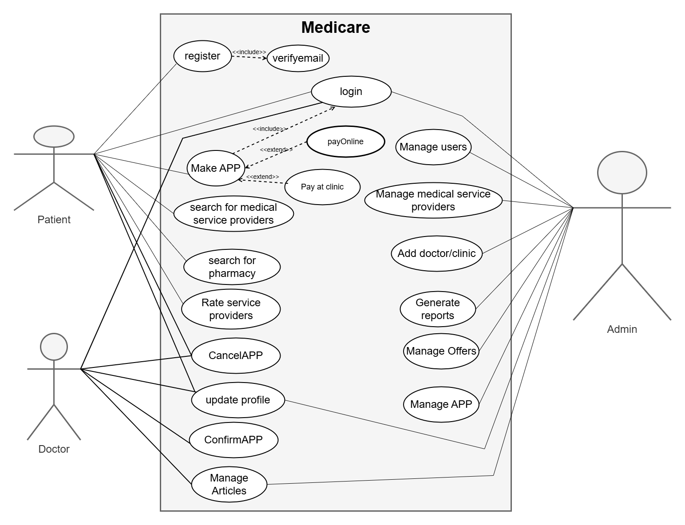
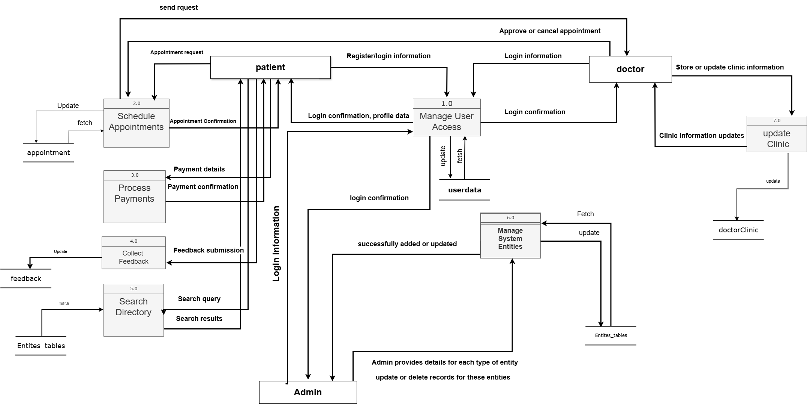
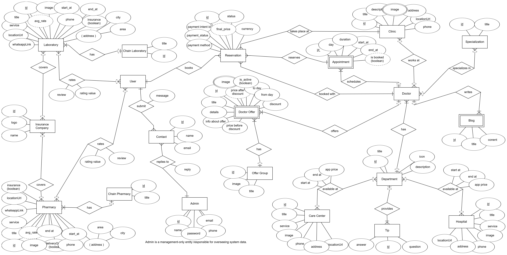

MediCare
Enhancing Healthcare Experience
MediCare is a comprehensive medical application and website designed to simplify healthcare access, enabling users to book doctor appointments, view specializations, and access a transparent rating system.

MediCare is a comprehensive medical application and website designed to simplify healthcare access, enabling users to book doctor appointments, view specializations, and access a transparent rating system.
Overview of the MediCare project
In this chapter, we discuss the overview of the MediCare project, its scope, limitations, and key terminologies used throughout the documentation.
MediCare is an application and website designed to enhance the healthcare experience by integrating a variety of medical services into a single, comprehensive platform. The application allows users to easily book doctor appointments, view their specializations, and access a transparent rating system that helps them make well-informed decisions. The project prioritizes credibility, ensuring that all information about doctors is verified for a secure and reliable experience. By leveraging modern technologies and a streamlined design, MediCare provides an innovative solution that meets user needs and improves the quality of healthcare services.
Challenges in the healthcare system
In this chapter, we explore the core problem that the MediCare project aims to address, delving into the challenges faced in the medical field that led to its development.
Accessing reliable healthcare services remains a challenge due to fragmented systems, lack of verified information, and limited accessibility to medical professionals. Patients often struggle to find accurate information about doctors, such as their specializations, availability, or credibility. Furthermore, there is no centralized platform that offers a seamless and trustworthy way to book appointments, check doctor ratings, and manage healthcare needs efficiently. These challenges lead to delays in treatment, patient frustration, and inefficiencies in the healthcare system.
| Issue | Weight |
|---|---|
| Lack of a unified platform for healthcare features | 10 |
| Difficulty accessing verified doctor information | 9 |
| Limited tools for efficient healthcare management | 8 |
Feasibility and approach of the MediCare solution
In this section, we analyze the proposed solution in terms of its feasibility, objectives, and expected outcomes, evaluating different approaches for the MediCare project.
The Agile methodology, involving iterative phases of planning, executing, and evaluating, is used for project management. Agile offers flexibility, adaptability to rapid changes, a customer-centric approach with continuous feedback, improved quality through testing, enhanced collaboration, risk management, faster time-to-market, and continuous improvement. For MediCare, Agile ensures a flexible, user-focused, and efficient development process, delivering valuable features early in the fast-paced healthcare domain.
Technologies and methodologies used
| Category | Technology |
|---|---|
| Language | PHP |
| Framework | Laravel 10 |
| Database | MySQL |
| Authentication | JWT (JSON Web Tokens) |
| Payment Processing | Stripe API |
| AI Analysis | Gemini API |
| OAuth Integration | Google API Client |
| Email service | Gmail App Password |
| Monitoring | Laravel Telescope |
| Testing | Postman |
| Category | Technology |
|---|---|
| Language | Dart |
| Framework | Flutter |
| State Management | Bloc / Cubit (Flutter Bloc) |
| Networking | Dio / http |
| Authentication | JWT Integration |
| UI Design | Material Design + Custom Widgets |
| Routing | GoRouter / Navigator 2.0 |
| Local Storage | SharedPreferences |
| Image Caching | CachedNetworkImage |
| Animations | flutter_animate / Lottie |
| Maps Integration | Google Maps Flutter |
| Form Validation | Flutter Form + Validators |
| Responsive Design | flutter_screenutil / LayoutBuilder |
| Category | Technology |
|---|---|
| Core Technologies | HTML, CSS, TypeScript |
| Framework | Angular 18 (standalone components) |
| UI Libraries | Bootstrap 5.3, PrimeNG, Font Awesome, Animate.css |
| State Management | RxJS Observables |
| Internationalization | ngx-translate |
| Authentication | JWT Authentication, Google Auth |
| Payment Processing | Stripe.js |
| Category | Technology |
|---|---|
| Design Tool | Figma |
Diagrams and architecture of the MediCare system
Illustrates interactions between users (patients, doctors, admins) and the system for functionalities like booking appointments and managing schedules.
Shows the system boundary with external entities like patients, doctors, and pharmacies.

Depicts data flow between processes (e.g., booking), data stores (e.g., database), and external entities.
Represents the database schema with entities like User, Doctor, Appointment, etc.
Experience the MediCare application workflow
MediCare simplifies the process of booking medical appointments with a user-friendly interface. Follow the steps below to see how patients can easily schedule appointments with their preferred doctors.
MediCare offers advanced search capabilities to help patients find the right healthcare provider. Users can search by specialty, location, availability, and read reviews from other patients.
Doctor Search Demo
MediCare provides a comprehensive patient profile system where users can manage their personal information, view medical history, track appointments, and access health records.

Detailed system interactions for users
Description: A user logs into the system using their Google account, creating or accessing their account and earning daily login points.
Actor: User
Preconditions: User has a valid Google account. Google ID token is provided and verifiable.
Steps:
Outcome: User is authenticated; account created/updated; token issued.
Exceptions: Invalid or unverifiable Google token returns error.
Description: A user signs up by providing personal details and receives a verification email.
Actor: User
Preconditions: User has a unique, valid email address.
Steps:
Outcome: Account created; verification email sent.
Exceptions: Invalid input (e.g., duplicate email) returns error.
Description: A user logs in with email and password to access the system.
Actor: Registered User
Preconditions: User has a verified account (email_verified_at not null). Correct email and password provided.
Steps:
Outcome: User authenticated; token issued.
Exceptions: Invalid credentials or unverified email return errors.
Description: A user verifies their email using a link to activate their account.
Actor: Registered User
Preconditions: User has a valid, non-expired verification_token.
Steps:
Outcome: Email verified; user can log in.
Exceptions: Invalid/expired token returns error.
Description: A user requests a new verification email.
Actor: Registered User
Preconditions: User has an unverified account (email_verified_at null). Email exists in system.
Steps:
Outcome: New verification email sent.
Exceptions: Invalid/already verified email returns error.
Description: A user requests a password reset link.
Actor: Registered User
Preconditions: User's email exists in system.
Steps:
Outcome: Reset email sent.
Exceptions: Invalid email or email failure returns error.
Description: A user resets their password using a reset link.
Actor: Registered User
Preconditions: User has a valid, non-expired reset_token.
Steps:
Outcome: Password updated; user can log in.
Exceptions: Invalid/expired token returns error.
Description: A logged-in user views their account details.
Actor: Authenticated User
Preconditions: User is authenticated with valid JWT token.
Steps:
Outcome: User receives account details.
Exceptions: Invalid token returns error.
Description: A user logs out, ending their session.
Actor: Authenticated User
Preconditions: User is authenticated with valid JWT token.
Steps:
Outcome: Session ended.
Exceptions: Invalid token returns error.
Description: A user deletes their account.
Actor: Authenticated User
Preconditions: User is authenticated with valid JWT token. Non-OAuth users must provide correct password.
Steps:
Outcome: Account deleted.
Exceptions: Invalid token/password returns error.
Description: A user views available appointment slots for a doctor on a specific day.
Actor: User
Preconditions: Doctor ID exists in the doctors table. Specified day is valid.
Steps:
Outcome: User receives available appointment slots.
Exceptions: Invalid doctor ID returns empty or error response.
Description: A user books an appointment with a doctor, applying a discount based on points.
Actor: Authenticated User
Preconditions: User is authenticated with a valid JWT token. Doctor, clinic, and appointment IDs exist; appointment is unbooked. User has sufficient points for discount.
Steps:
Outcome: Reservation created; appointment booked; email sent.
Exceptions: Invalid input, booked appointment, or insufficient points return errors.
Description: A user confirms their pending reservation.
Actor: Authenticated User
Preconditions: User is authenticated and owns the reservation. Reservation exists and is in pending status.
Steps:
Outcome: Reservation confirmed; appointment booked.
Exceptions: Unauthorized user or non-pending reservation returns error.
Description: A user cancels their reservation.
Actor: Authenticated User
Preconditions: User is authenticated and owns the reservation. Reservation exists.
Steps:
Outcome: Reservation canceled; appointment freed.
Exceptions: Unauthorized user or non-existent reservation returns error.
Description: A user views their reservation history.
Actor: Authenticated User
Preconditions: User is authenticated with a valid JWT token.
Steps:
Outcome: User receives reservation history.
Exceptions: Unauthorized user returns error.
Description: A doctor views all their reservations.
Actor: Authenticated Doctor
Preconditions: Doctor is authenticated with a valid token and has doctor role.
Steps:
Outcome: Doctor receives reservation list.
Exceptions: Unauthorized or non-doctor user returns error.
Description: A doctor views details of a specific reservation.
Actor: Authenticated Doctor
Preconditions: Doctor is authenticated with a valid token and has doctor role. Reservation exists and belongs to the doctor.
Steps:
Outcome: Doctor receives reservation details.
Exceptions: Unauthorized, non-doctor, or non-existent reservation returns error.
Description: A user or doctor marks a reservation-related notification as read.
Actor: Authenticated User or Doctor
Preconditions: User or doctor is authenticated. Notification exists and belongs to the user/doctor.
Steps:
Outcome: Notification marked as read.
Exceptions: Unauthorized or non-existent notification returns error.
Description: A doctor confirms a pending reservation.
Actor: Authenticated Doctor
Preconditions: Doctor is authenticated with a valid token and has doctor role. Reservation exists, belongs to the doctor, and is pending.
Steps:
Outcome: Reservation confirmed; appointment booked.
Exceptions: Unauthorized, non-doctor, or non-pending reservation returns error.
Description: A doctor cancels a reservation.
Actor: Authenticated Doctor
Preconditions: Doctor is authenticated with a valid token and has doctor role. Reservation exists, belongs to the doctor, and is not already canceled.
Steps:
Outcome: Reservation canceled; appointment freed.
Exceptions: Unauthorized, non-doctor, or already canceled reservation returns error.
Description: A doctor marks a confirmed reservation as visited after the appointment.
Actor: Authenticated Doctor
Preconditions: Doctor is authenticated with a valid token and has doctor role. Reservation exists, belongs to the doctor, and is confirmed.
Steps:
Outcome: Reservation marked as visited.
Exceptions: Unauthorized, non-doctor, or non-confirmed reservation returns error.
Description: A user initiates a payment for a reservation using a card.
Actor: Authenticated User
Preconditions: User is authenticated with a valid JWT token. Reservation ID exists in the reservations table. Stripe API is configured with a valid secret key.
Steps:
Outcome: Payment intent created; user can complete payment on frontend.
Exceptions: Invalid reservation, insufficient amount, or Stripe API errors return error.
Description: The system updates a reservation's payment status after Stripe confirms payment success.
Actor: Authenticated User
Preconditions: User is authenticated with a valid JWT token. Reservation exists with a valid payment_intent_id. Stripe API is configured with a valid secret key.
Steps:
Outcome: Payment status updated; user receives confirmation email.
Exceptions: Non-existent reservation, non-succeeded payment, or Stripe API errors return error.
Description: A user submits symptoms (text) and/or a medical image for AI analysis to receive a probable diagnosis, recommended specialization, and advice.
Actor: User
Preconditions: User provides either text describing symptoms or an image (or both). Image, if provided, is a valid image file (e.g., JPEG, max 5MB).
Steps:
Outcome: User receives AI-generated health analysis with diagnosis, advice, and warnings.
Exceptions: Missing input, invalid image, or Gemini API errors return error responses.
Description: A user uploads a prescription image for AI analysis to extract medication details, prescription summary, and advice.
Actor: User
Preconditions: System is configured with a valid GEMINI_API_KEY. User provides a valid image file (e.g., JPEG, max 5MB) of a prescription.
Steps:
Outcome: User receives prescription details, medications, and warnings.
Exceptions: Invalid image, unclear prescription, or Gemini API errors return error.
Description: A user requests detailed information about a specific medicine, including indications, dosage, side effects, and precautions.
Actor: User
Preconditions: User provides a request with medicine name.
Steps:
Outcome: User receives detailed medicine information.
Exceptions: Invalid medicine name or Gemini API errors return error.
Description: A user uploads a lab test report (image or PDF) for AI analysis to extract test results, interpretation, and recommendations.
Actor: User
Preconditions: User provides a valid file (JPEG, PNG, or PDF, max 5MB) of a lab test report.
Steps:
Outcome: User receives lab test analysis with results, interpretation, and warnings.
Exceptions: Invalid file, unclear report, or Gemini API errors return error.
LEVEL 4 [2025] - CS Department
Dr. Seham Elaw Amer
Back-End
CS
Back-End
CS
Back-End
CS
Front-End
CS
Front-End
CS
UI/UX
CS
Mobile Developer
CS
Mobile Developer
CS
Gratitude to our supporters
We express our deepest gratitude to our Advisor Dr. Seham for her support, outstanding guidance, and encouragement throughout our graduation project.
We thank Engineer Dr. Elnomery Zanaty for his continuous support and help, always providing more than the needed time and effort since the project's beginning.
We are grateful to our families, especially our parents. We hope they are proud of us in our final year of education, and we aim to give back to the community soon.
Finally, we thank our faculty for providing courses that guided us and the professors who left a significant impact on our lives.
Overview of the MediCare platform
Seamless doctor appointment scheduling
Find the right specialist for your needs
Make informed decisions with transparent ratings
Credible and accurate doctor profiles
MediCare is a comprehensive medical application and website designed to simplify healthcare access. It enables users to book doctor appointments, view doctor specializations, and read ratings for informed decision-making. The platform ensures the credibility and accuracy of doctor information, with each professional having a rating system to evaluate their performance. MediCare aims to provide a seamless and reliable healthcare experience for users.